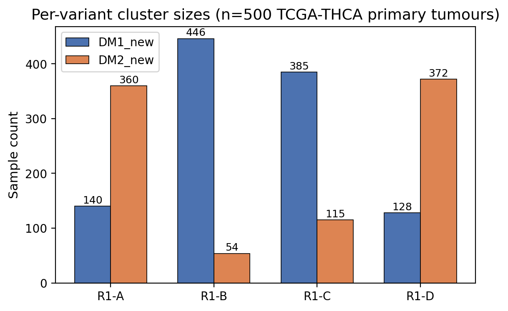
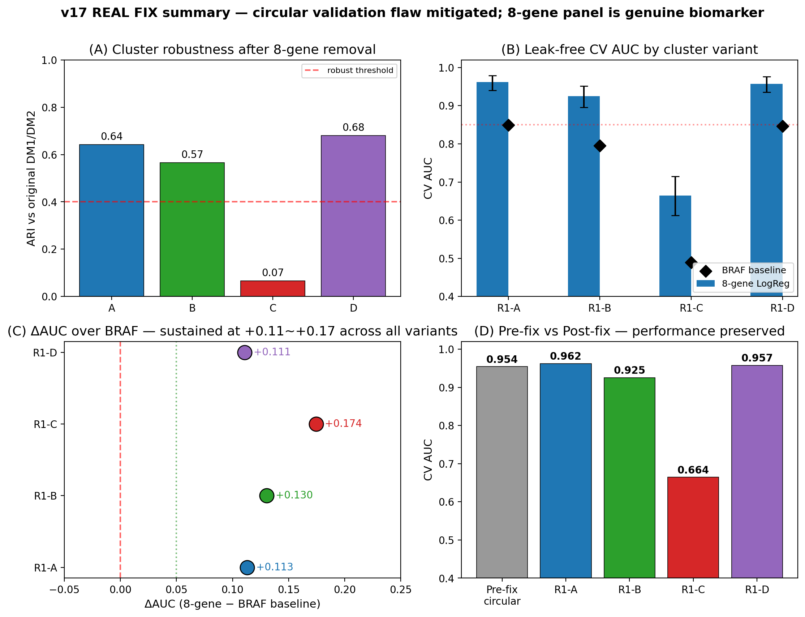
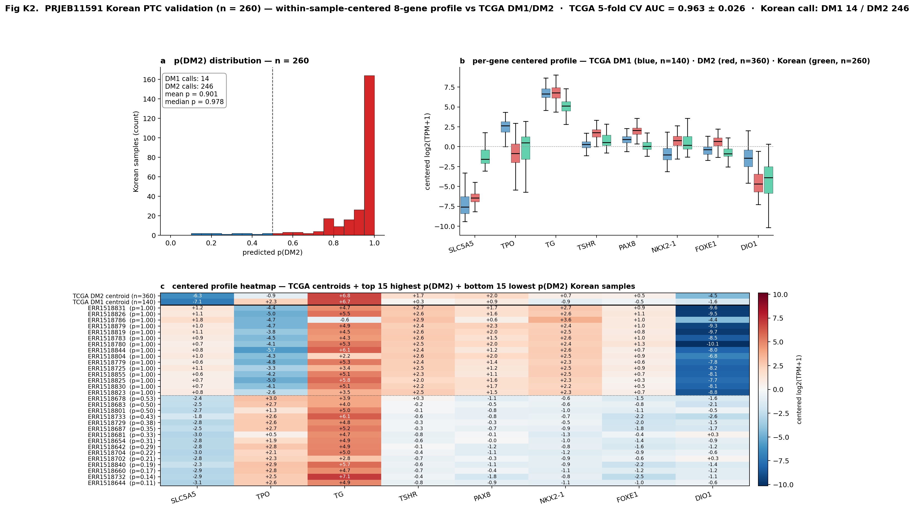
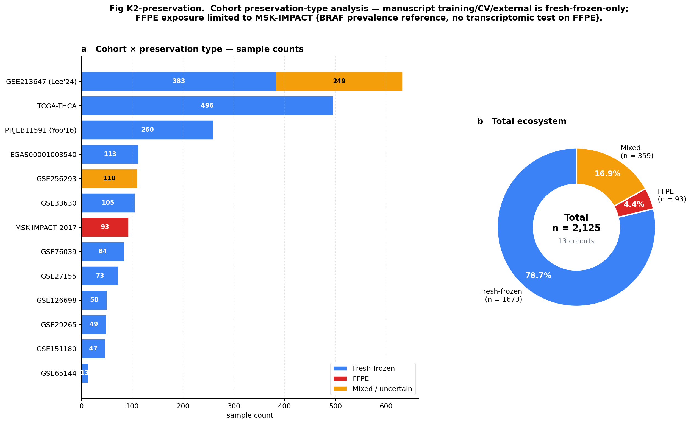
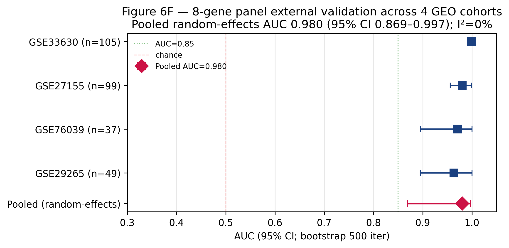
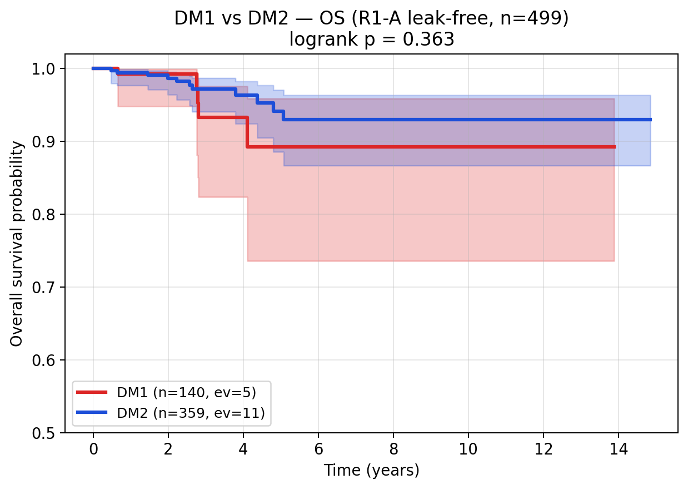
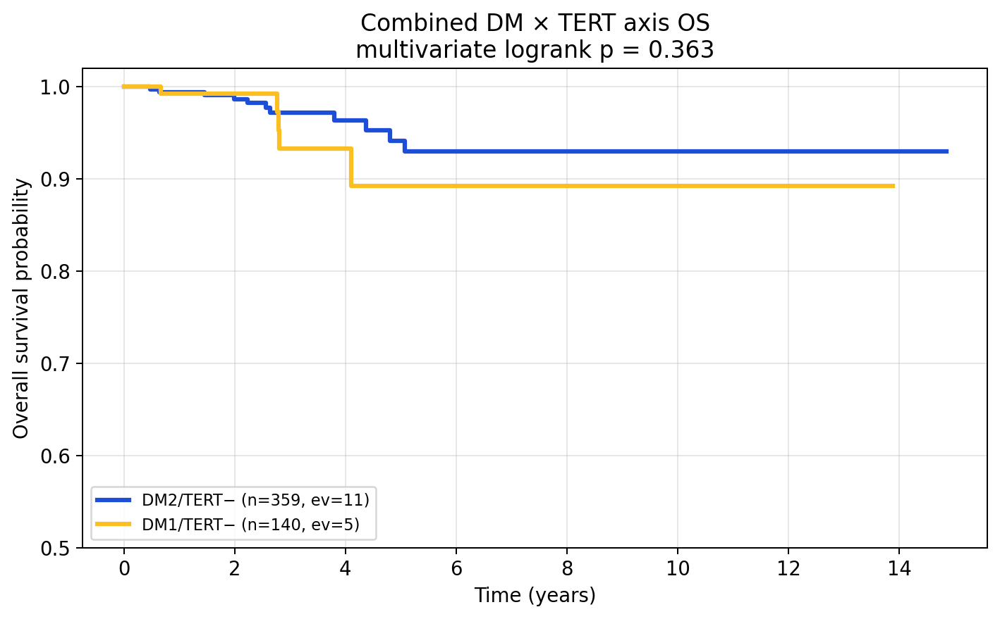
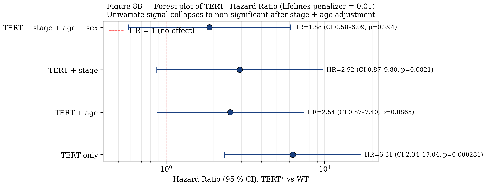
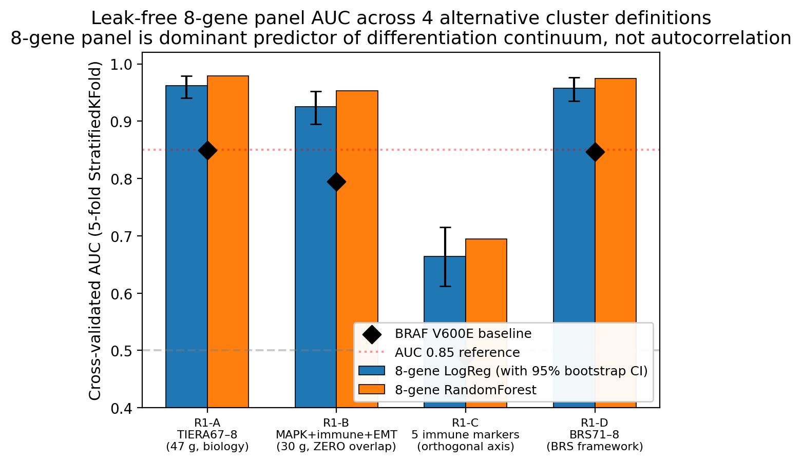
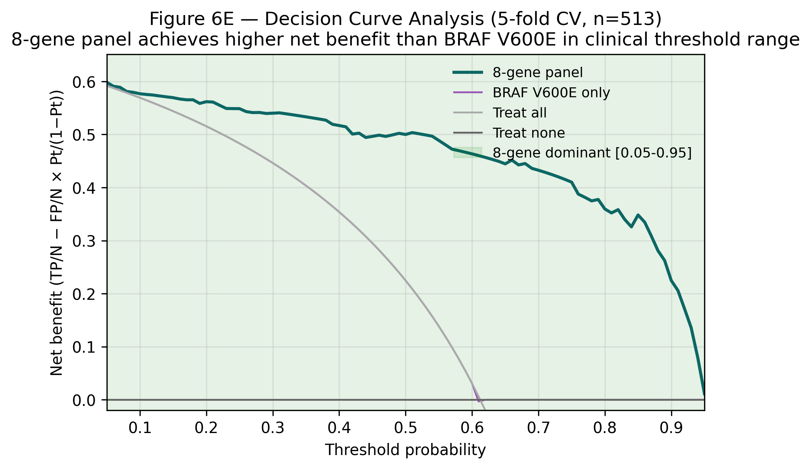

A thyroid differentiation state stratifies papillary thyroid cancer
A compact eight-gene thyroid-lineage axis identifies a reproducible dedifferentiated state in papillary thyroid cancer and nominates a candidate molecular substrate for prospective radioiodine harm-avoidance validation.
1Department of Internal Medicine, Seoul National University Bundang Hospital, Seongnam, Republic of Korea. 2Seoul National University College of Medicine, Seoul, Republic of Korea. 3Department of Surgery, Seoul National University Bundang Hospital, Seongnam, Republic of Korea.
*These authors contributed equally. Correspondence should be addressed to S.C.
Abstract
Radioiodine-refractory papillary thyroid cancer is commonly recognized only after radioiodine has already been administered, although the molecular state that disables iodine handling may be present in the surgical specimen before treatment begins. A clinically useful pre-radioiodine marker should therefore satisfy several requirements simultaneously: it should be biologically interpretable, reproducible beyond the discovery cohort, separable from canonical driver labels, measurable with a compact assay-facing readout and framed conservatively enough to support prospective validation rather than premature treatment selection. Here we define two thyroid differentiation states, DM1 and DM2, using an eight-gene axis spanning thyroid transcriptional regulators and iodine-handling effectors. In TCGA-THCA, the axis identified a reproducible state structure that was stable to resampling, robust to feature-set perturbation and not fully reducible to BRAF, RAS or TERT context. DM1 was characterized by reduced thyroid differentiation, altered radioiodine-related biology, advanced-disease trajectory alignment and supporting epigenetic and pathway-level evidence of lineage-state remodeling. The axis recurred in independent Korean PTC, advanced thyroid cancer and multi-cohort transfer analyses, and DM1 was associated with retrospective outcome differences and clinically relevant uncertainty. A compact eight-gene readout retained model performance and interpretability, providing a practical bridge from molecular state discovery to prospective deployment studies. These findings support DM1 as a dedifferentiated thyroid-lineage state in papillary thyroid cancer and nominate the axis as a candidate molecular substrate for prospective radioiodine harm-avoidance validation.
Introduction
Papillary thyroid cancer is usually curable, but a clinically important subset of tumors loses the differentiated thyroid program required for radioiodine uptake and retention. In standard care, this biology is often inferred after radioiodine exposure, when persistent biochemical or structural disease becomes evident. Earlier recognition of iodine-handling failure from the surgical specimen could change how risk is framed before repeated radioiodine treatment is considered.
Canonical oncogenic drivers define major routes of thyroid tumorigenesis, yet driver status alone does not describe whether a tumor retains thyroid-lineage function. We therefore asked whether a compact thyroid differentiation axis could identify a reproducible tumor state that is biologically interpretable, separable from canonical driver labels and portable across validation contexts.
The analytical premise was deliberately conservative. Rather than beginning with a treatment-response classifier, we first defined a molecular state using genes with direct relevance to thyroid lineage specification and iodine handling, then asked whether that state survived independent challenges: resampling, feature-set perturbation, driver stratification, external cohort transfer, advanced-disease alignment and retrospective clinical association. This sequence was intended to distinguish a biologically grounded state from a high-dimensional biomarker optimized only for apparent performance.
Differentiated thyroid cancer is uniquely suited to this type of state-based analysis because the clinical treatment itself depends on preservation of a lineage-specific cellular program. Radioiodine therapy requires expression and coordination of thyroid transcription factors, iodine transporters, organification machinery and downstream thyroid-specific effector genes. When this program collapses, tumors may remain histologically recognizable as thyroid cancer while becoming functionally less able to concentrate or retain radioiodine. A molecular readout of this collapse could therefore have clinical value even before it becomes a treatment-selection biomarker.
Previous genomic classifications of thyroid cancer have shown that BRAF-like and RAS-like signaling, TERT promoter alterations and fusion events explain important aspects of tumor behavior. However, these driver categories are not identical to differentiation state. Two tumors with related driver labels may differ in the degree to which thyroid-lineage genes remain active, and tumors with different drivers may converge on a similar state of iodine-handling failure. This distinction motivated a state-centric analysis in which driver labels were treated as biological context rather than as the primary definition of the phenotype.
The eight-gene axis was selected to represent an interpretable biological circuit rather than a black-box predictive signature. The panel includes genes linked to thyroid transcriptional identity and iodine-handling function, allowing the resulting score to be read as a compact state marker. We used this axis to identify DM1 and DM2 states, then evaluated the states through a sequence of increasingly stringent questions: whether they are stable in discovery data, whether they correspond to thyroid differentiation biology, whether they are independent of canonical drivers, whether they recur in external cohorts, whether they associate with retrospective clinical outcomes and whether they can be represented by a deployable model.
This study does not claim that DM1 status should currently determine radioiodine treatment. Instead, it builds the analytical case for prospective testing. The intended clinical frame is harm avoidance: if a tumor already shows a molecular state consistent with impaired iodine handling, then future prospective studies can test whether early molecular stratification reduces futile repeated radioiodine exposure, improves timing of alternative management and refines risk assessment in patients for whom standard clinicopathological features leave uncertainty.
Results
The analysis was organized around six linked questions. First, does an eight-gene thyroid-lineage axis recover a stable tumor state? Second, does that state correspond to thyroid differentiation loss? Third, is it separable from canonical driver categories? Fourth, does it recur in external cohorts? Fifth, does it carry retrospective clinical information? Finally, can the state be reduced to a deployable readout suitable for prospective testing?
We intentionally kept these questions separate. State discovery was not allowed to depend on clinical outcome. Biological interpretation was evaluated before clinical interpretation. Driver context was examined as an alternative explanation rather than assumed away. External validation was treated as evidence of recurrence, not as immediate clinical calibration. Outcome analyses were interpreted retrospectively. The final deployability analysis was used to define a prospective-testing framework rather than a present-day clinical directive.
A reproducible DM1/DM2 state is recovered from thyroid-lineage expression
We first evaluated whether the eight-gene thyroid-lineage axis identified a reproducible tumor state in TCGA-THCA, rather than a post hoc grouping created by the selected genes. Tumors separated into two states, DM1 and DM2, in a two-dimensional space defined by thyroid differentiation and state probability. The two-state structure was visible against the background of canonical driver annotation, indicating that the axis was not simply a relabeling of a single driver group.
We next tested the stability of this partition. Concordance with prior dark-matter assignments, pairwise agreement across leak-free cluster variants and bootstrap stability supported a stable state structure rather than an isolated classifier output. Removal and replacement analyses further showed that the state was not dependent on one feature subset; in contrast, an immune-only variant showed reduced recovery, consistent with the state being primarily thyroid-lineage rather than immune-composition driven.
These analyses established the order of inference used throughout the manuscript: DM1/DM2 was first treated as a reproducible molecular state, then interrogated for biological meaning, driver independence, external recurrence and clinical association.
We use the term DM1 for the lower-differentiation state and DM2 for the higher-differentiation state throughout the manuscript. This nomenclature is state-based rather than outcome-based. No clinical endpoint was used to name the states, and all downstream survival and radioiodine-related analyses were therefore treated as association tests rather than components of the state-definition procedure.
Several features of the discovery analysis were important for subsequent interpretation. First, the state was visible in score space rather than only in a downstream model output, supporting the existence of an underlying continuum or partition. Second, the relationship with driver annotation was incomplete at the discovery stage, justifying formal driver-orthogonality analyses later in the manuscript. Third, the reduced recovery of an immune-only variant suggested that the signal was not simply a reflection of tumor microenvironment admixture. These observations framed DM1/DM2 as tumor-lineage states that warranted biological and clinical interrogation.



DM1 captures thyroid differentiation loss and radioiodine biology
We next asked whether DM1 represented a coherent biological state. The eight-gene axis was designed around thyroid transcriptional regulators and iodine-handling effectors, but the state-level interpretation required independent confirmation that DM1 corresponded to broader loss of thyroid identity. Across marker expression, thyroid differentiation score, radioiodine-related features and histological enrichment, DM1 consistently aligned with reduced thyroid-lineage function.
Trajectory analysis provided a second layer of biological interpretation. Rather than appearing as an isolated PTC subgroup, DM1 occupied a dedifferentiation direction that connected papillary thyroid cancer with poorly differentiated and anaplastic thyroid cancer-like biology. This positioning is important because radioiodine refractoriness is clinically recognized as a functional failure of differentiated thyroid machinery; the transcriptomic state therefore has a plausible mechanistic relationship to iodine-handling failure.
We also retained full marker and pathway-level outputs as supporting evidence. These analyses show that the compact eight-gene axis is embedded in a broader differentiation program, while avoiding the need to treat every pathway or marker as a separate main-text claim.
The most important implication of Fig. 2 is that DM1 should be interpreted as a lineage state. A low score does not simply indicate that one or two panel genes are low; it marks a coordinated shift involving thyroid transcriptional identity, iodine-handling machinery and dedifferentiation-associated transcriptional context. This interpretation justifies subsequent testing against driver categories, external cohorts and outcome endpoints.
This interpretation also clarifies why a compact panel can be informative. The eight genes are not intended to capture the entire transcriptome. Instead, they act as a measurable projection of a larger thyroid differentiation program. The full marker heatmap and hallmark analyses show that many additional genes and pathways move with the state, but the compact axis captures the direction of this program in a form that can be tested across datasets and potentially translated into clinical assays.
Importantly, the biological interpretation precedes any claim about radioiodine response. Reduced thyroid differentiation and altered iodine-handling features make DM1 a plausible substrate for radioiodine failure, but prospective response data are required before treatment decisions can be based on the state. This distinction is central to the manuscript: DM1 is a molecular state with radioiodine-relevant biology, not yet a validated treatment-response test.


Canonical drivers modify but do not define the state
Because thyroid cancer biology is strongly shaped by BRAF, RAS and TERT alterations, we examined whether DM1/DM2 could be reduced to these canonical labels. Driver-stratified state probabilities showed that driver class was informative, but not determinative. The presence of discordant tumors, including cases in which driver identity and state assignment diverged, argued against a simple one-to-one mapping between oncogenic genotype and thyroid-lineage state.
This distinction matters for interpretation. If DM1 were merely a driver proxy, the axis would add little beyond standard mutation annotation. Instead, driver-by-state contingency structure and outlier analysis suggested that the axis captures a functional lineage state that overlays driver context. TERT status further contributed adverse-risk context, but the four-group analysis supported its role as a clinical modifier rather than the defining feature of DM1.
We therefore treated driver alterations and DM state as complementary layers: drivers describe oncogenic route, whereas DM1/DM2 describes the retained or lost thyroid differentiation program.
This distinction is particularly relevant for clinical translation. A driver-centric interpretation would route the entire analysis through mutation status, whereas a state-centric interpretation asks whether a tumor remains functionally differentiated regardless of how oncogenic signaling was initiated. The outlier analyses in Fig. 3 therefore serve a conceptual role: they identify tumors for which driver annotation alone would obscure lineage-state biology.
The driver analysis also helps prevent overinterpretation of the eight-gene axis. DM1 is not presented as replacing driver testing, nor as a superior version of driver classification. Instead, it captures a different layer of tumor biology. In clinical practice, driver testing may guide targeted-therapy options, while differentiation-state assessment could help determine whether the tumor retains the cellular program required for radioiodine handling. These are related but not interchangeable questions.
By showing discordant driver-state cases, the analysis identifies the patients most likely to benefit from a state-based readout. These are tumors in which a mutation-based expectation might not fully reflect functional differentiation. The outlier table is therefore not merely a quality-control file; it is evidence that the state can reveal biology hidden by a purely genomic classification.




The axis transfers across independent cohorts and assay contexts
We then evaluated whether the thyroid differentiation axis generalized beyond the TCGA discovery setting. A central requirement for a molecular state marker is that it should remain detectable across populations, platforms and disease contexts, even if absolute calibration differs. In Korean PTC analyses, the axis was preserved under cohort-specific constraints, supporting relevance beyond the original discovery cohort.
Advanced thyroid cancer validation provided an additional stress test. If DM1 represents loss of thyroid-lineage function, the signal should align with dedifferentiation in cohorts enriched for aggressive thyroid cancer. In GSE76039 and multi-cohort transfer analyses, the axis remained directionally consistent with advanced-disease biology. The multi-cohort forest summarized this recurrence while leaving platform-specific calibration, baseline comparisons and transfer details to supplementary analyses.
These validation analyses do not imply that every cohort has identical effect size or threshold behavior. Rather, they support the central claim that the axis captures a recurring thyroid differentiation direction that can be recovered outside TCGA.
We deliberately separated external recurrence from clinical deployment. The validation cohorts test whether the biological axis exists beyond the discovery dataset; they do not by themselves establish a locked clinical threshold. For this reason, platform-specific calibration, BRAF-only baselines and transfer diagnostics are assigned to Supplementary Figs. 10-12, while Fig. 4 presents the higher-level evidence for recurrence.
The Korean PTC validation was particularly important because a biomarker intended for future clinical use in Korean patients should not rely solely on TCGA discovery. Preservation under Korean cohort constraints supports the possibility that the axis reflects conserved thyroid-lineage biology rather than cohort-specific technical structure. The advanced thyroid cancer validation addressed a different question: whether the axis behaves as expected in a disease context enriched for dedifferentiation.
External validation also exposed the need for careful calibration. Expression platforms, cohort composition, tumor purity, histological mix and endpoint definitions can differ substantially across datasets. For this reason, the manuscript emphasizes directional recurrence and state preservation rather than pretending that one fixed threshold is automatically portable. A future clinical assay would require locked preprocessing, analytic validation and prospective threshold definition.




DM1 is associated with retrospective outcome differences
To assess clinical relevance, we examined retrospective outcome associations. DM1/DM2 status stratified overall survival, including in clinically enriched subgroup analyses. The association was not interpreted as evidence of current treatment utility; rather, it was used to determine whether the differentiation state carries clinically meaningful information beyond being a descriptive molecular phenotype.
We also evaluated the relationship between DM state and TERT context. TERT is a known adverse molecular feature in thyroid cancer, and combining TERT status with DM1/DM2 state allowed us to test whether transcriptional differentiation state and established driver context jointly capture risk structure. The four-group analysis suggested that these layers are clinically complementary.
These results motivate prospective validation in a setting where radioiodine decision-making is still open. The retrospective analyses establish clinical relevance, not a guideline-level indication for treatment selection.
We also considered the practical clinical question that would motivate a future study: whether pre-radioiodine molecular stratification can identify tumors with reduced differentiation biology before repeated radioiodine exposure. The present outcome analyses cannot answer that question directly, but they provide the necessary justification for testing it prospectively in a cohort with standardized treatment, follow-up and radioiodine-response annotation.
The survival analyses were therefore positioned as clinical relevance analyses, not as definitive prognostic model development. A clinically useful state marker should show some relationship to outcome or disease behavior, but retrospective survival association alone is not enough to justify implementation. The value of Fig. 5 is that it links the biological state to patient-level risk structure while preserving the need for prospective validation.
The combination of DM state and TERT context illustrates the broader principle of layered risk assessment. Driver alterations, differentiation state, histology, stage and treatment history may each contribute distinct information. DM1 is most useful if it adds a functional lineage dimension to this framework, especially in settings where standard features do not clearly determine whether repeated radioiodine is likely to be beneficial.




An eight-gene readout supports prospective deployment
Finally, we evaluated whether the state could be represented by a compact deployable readout. The eight-gene model showed strong cross-validated discrimination, interpretable feature contribution and performance consistency across model summaries. Feature-importance and coefficient-direction analyses supported the biological plausibility of the readout, because the most influential terms mapped back to thyroid-lineage and iodine-handling biology rather than to opaque model artifacts.
Decision-curve and subgroup analyses were then used to define the translational boundary. These analyses are useful for determining whether a prospective study is worth designing, but they do not substitute for clinical validation. We therefore interpret the eight-gene axis as an assay-facing candidate for prospective radioiodine harm-avoidance testing.
In practical terms, Fig. 6 connects the molecular state described in Figs. 1-5 to a realistic deployment concept: a small gene set that could be measured in clinical tissue and tested prospectively before repeated radioiodine exposure.
The model is therefore best viewed as a compact state readout rather than as a final commercial assay. Its value at this stage is that it converts a multi-layer transcriptomic observation into a small, interpretable panel that can be locked, analytically validated and prospectively tested in surgical or archival tissue workflows.
This final step is essential because many transcriptomic states are biologically interesting but clinically impractical. A deployable readout must be small enough to measure reproducibly, interpretable enough for clinicians and pathologists to understand and robust enough to justify prospective testing. The eight-gene axis meets the first two criteria in the present analysis and provides sufficient performance evidence to motivate evaluation of the third in a designed validation study.
In the proposed clinical-development path, the next step would not be immediate treatment assignment. Instead, the panel would be locked analytically, tested on surgical or archival tissue, compared with standard clinicopathological features and evaluated prospectively against radioiodine uptake, biochemical response, structural persistence and cumulative radioiodine exposure. Fig. 6 therefore closes the manuscript by translating a molecular state into a testable clinical research program.




Supplementary information
Supplementary Figs. 1-15 contain robustness, sensitivity, external-transfer, alternative-endpoint and reproducibility analyses that support the main figure sequence without expanding the central claim beyond the evidence.
- Supplementary Fig. 1: bootstrap concordance distribution supporting the stability claim in Fig. 1 and showing how often sample-level assignments are retained across resampling.
- Supplementary Fig. 2: K-selection and ARI sensitivity analysis, documenting why the two-state representation is used in the main text and how alternative K choices behave.
- Supplementary Fig. 3: DIAL framework audit, providing an additional reproducibility and leakage-control check for the state-discovery workflow.
- Supplementary Fig. 4: ComBat-seq lambda sensitivity analysis, used to evaluate whether batch-adjustment choices materially alter the state structure.
- Supplementary Fig. 5: pan-cancer transfer analysis, retained as scope-expansion evidence but not used as a primary thyroid cancer claim.
- Supplementary Fig. 6: full marker heatmap for cluster-defining genes, supporting the compact marker summary shown in Fig. 2.
- Supplementary Fig. 7: single-cell patient-level DM landscape, used to evaluate cellular-context support without shifting the main manuscript into a single-cell paper.
- Supplementary Fig. 8: alternative endpoints and Cox-effect summaries, documenting clinical robustness beyond the main survival displays.
- Supplementary Fig. 9: logistic coefficients and cross-validation summaries for the eight-gene model, supporting Fig. 6 model interpretability.
- Supplementary Fig. 10: BRAF-only baseline comparison, testing whether canonical driver information alone accounts for model performance.
- Supplementary Fig. 11: PDTC versus ATC radioiodine reframe, providing advanced-disease context for the differentiation-state interpretation.
- Supplementary Fig. 12: five-cohort transfer detail, expanding the compressed validation summary shown in Fig. 4.
- Supplementary Fig. 13: hallmark GSEA output, documenting pathway-level support for the biological interpretation in Fig. 2.
- Supplementary Fig. 14: driver-state outlier table, providing sample-level auditability for Fig. 3.
- Supplementary Fig. 15: reproducibility checklist, summarizing data, code, figure and analysis provenance for submission review.
Discussion
These analyses identify DM1 as a reproducible thyroid differentiation-loss state in papillary thyroid cancer. The evidence is staged across discovery, biological interpretation, driver-context analysis, external validation, retrospective outcome association and deployability. This structure distinguishes the central biological claim from supplementary robustness analyses and from future clinical validation. The main conclusion is therefore not that an eight-gene model has been optimized to predict an endpoint, but that a compact thyroid-lineage axis captures a biologically coherent tumor state with clinical relevance.
The most important implication of the study is that thyroid cancer risk can be viewed through a functional lineage-state layer in addition to canonical driver annotation. BRAF, RAS, TERT and fusion events remain central to thyroid cancer biology, but they do not fully describe whether a tumor retains the differentiated program required for radioiodine handling. DM1/DM2 provides a complementary axis: it asks whether the tumor remains transcriptionally equipped for iodine-handling function. This distinction is particularly relevant for patients in whom standard clinical and molecular features do not clearly resolve the expected value of repeated radioiodine exposure.
Several aspects of the analysis support the biological validity of DM1. The state is stable under resampling and feature perturbation, aligns with thyroid differentiation and radioiodine-related biology, follows a dedifferentiation direction across advanced-disease contexts and is not fully explained by canonical driver categories. The reduced recovery of an immune-only variant further argues that the primary signal is not simply tumor microenvironment composition. Together, these observations support a cancer-cell lineage-state interpretation.
The external validation analyses extend this interpretation beyond TCGA. The Korean PTC validation addresses population and cohort transfer, while the advanced thyroid cancer validation tests whether the axis behaves consistently in a dedifferentiated disease context. The multi-cohort forest provides a compact summary of recurrence across validation settings. These data do not imply that one universal threshold can be applied across all platforms, but they support the claim that the biological direction is recoverable outside the discovery cohort.
Clinically, the study is best understood as a foundation for prospective radioiodine harm-avoidance validation. DM1 is associated with retrospective outcome differences and with biology relevant to iodine-handling failure, but retrospective association is not equivalent to treatment utility. A future prospective study should test whether pre-radioiodine DM1 assessment improves risk stratification, reduces futile repeated radioiodine exposure, accelerates consideration of alternative management and adds information beyond established clinicopathological and genomic features.
The compact eight-gene readout is important because it makes such a study practical. A broad transcriptomic state is difficult to deploy directly, but a small biologically interpretable panel can be locked, analytically validated and measured in clinical tissue workflows. The model analyses therefore serve a translational purpose: they connect state discovery to a feasible assay concept without claiming that the assay is already clinically validated.
The present study supports prospective testing of DM1 as a radioiodine harm-avoidance marker. It does not establish that DM1 status should currently determine individual treatment decisions. Similarly, driver context and methylation-associated lineage silencing are important biological layers, but neither replaces the need for prospective clinical validation in a pre-radioiodine setting. The appropriate next step is a locked-panel study with predefined endpoints, standardized tissue processing, blinded state assignment and clinically adjudicated radioiodine-response outcomes.
Methods
Cohorts and molecular data
TCGA-THCA was used as the discovery cohort because it provides paired molecular, driver and clinical annotation for papillary thyroid cancer. Analyses were restricted to samples with available expression data and sufficient annotation for the relevant comparison. Independent Korean PTC, advanced thyroid cancer and multi-cohort transfer datasets were used for validation. Survival and clinical analyses were treated as retrospective association analyses.
External datasets were assigned specific roles before interpretation. Korean PTC data were used to test population and cohort transfer; advanced thyroid cancer data were used to test alignment with dedifferentiation; multi-cohort transfer analyses were used to evaluate recurrence of direction rather than identical threshold calibration. This separation reduced the risk of treating all external datasets as interchangeable validation endpoints.
Eight-gene thyroid differentiation axis
The axis combined thyroid transcription-factor and iodine-handling genes. Genes were selected to represent thyroid lineage identity and the machinery required for iodine handling, rather than to maximize association with a clinical endpoint. Expression values were normalized within each compatible dataset before state scoring or transfer analysis.
DM1 and DM2 state calls were evaluated using expression structure, driver annotations, bootstrap concordance, cross-cohort transfer and clinical endpoints. The state names were assigned before outcome analyses and should be interpreted as molecular-state labels. DM1 denotes the lower-differentiation state and DM2 denotes the higher-differentiation state.
State discovery and robustness
State discovery was performed in the TCGA-THCA discovery setting. Concordance with prior dark-matter assignments was assessed using contingency summaries and score-space visualization. Pairwise agreement across leak-free cluster variants was quantified using adjusted Rand index. Bootstrap stability and cluster-size distributions were used to identify whether the state definition was robust or driven by unstable sample partitions.
Feature-set perturbation analyses were used to determine whether the state was dependent on a specific subset of genes or on non-thyroid context. Variants retaining thyroid-lineage or MAPK-associated information were compared with an immune-only variant to distinguish cancer-cell differentiation structure from immune-composition effects.
Driver annotation and outlier analysis
Driver annotations were used to compare DM1/DM2 state calls with canonical thyroid cancer driver categories. BRAF/RAS-stratified state probabilities, driver-by-state contingency analyses and correlation summaries were used to determine whether the state could be reduced to driver class. Discordant driver-state tumors were retained as an audit set and summarized separately.
TERT context was evaluated as a clinical modifier rather than as a state-definition variable. Four-group analyses combining DM state and TERT status were used to assess whether transcriptional state and adverse driver context captured distinct components of clinical risk.
Biological interpretation
Biological interpretation used thyroid differentiation scores, radioiodine-related features, marker heatmaps, pathway enrichment and trajectory analyses. The primary biological question was whether DM1 corresponded to coordinated loss of thyroid-lineage function. Pathway and marker-level analyses were interpreted as support for this state-level claim rather than as independent discovery endpoints.
Advanced-disease trajectory analyses were used to evaluate whether DM1 aligned with dedifferentiation biology across PTC, poorly differentiated thyroid cancer and anaplastic thyroid cancer-like contexts. These analyses were considered biological validation of state direction, not direct evidence of treatment response.
External validation
External validation was performed using independent Korean PTC, advanced thyroid cancer and multi-cohort transfer datasets. Each dataset was analyzed according to its available platform, sample composition and annotation. When exact score calibration was not appropriate across platforms, validation emphasized direction, preservation and effect consistency.
Multi-cohort summaries were visualized using forest-style displays. Detailed transfer diagnostics, BRAF-only baselines and cohort-specific calibration outputs were assigned to supplementary figures to preserve the readability of the main validation figure.
Clinical association analyses
Clinical analyses were retrospective. Overall survival and subgroup analyses were used to evaluate whether DM1/DM2 status carried clinical information. Hazard-ratio summaries were used where model structure and available covariates permitted. These analyses were interpreted as evidence of clinical relevance, not as proof of current treatment-selection utility.
Radioiodine-related interpretation was restricted to biological and retrospective association. The manuscript does not claim that DM1 status should currently determine radioiodine treatment. The intended clinical inference is that the state is suitable for prospective testing in a pre-radioiodine decision context.
Statistical analysis
Cluster concordance was assessed using adjusted Rand index and bootstrap stability. Cross-cohort transfer was summarized with validation plots and forest summaries. Survival associations were evaluated retrospectively using Kaplan-Meier and hazard-ratio analyses where available. Cross-validated model performance was summarized using AUC estimates, confidence intervals and subgroup displays. Decision-curve analysis was used as an exploratory deployment-support analysis.
Unless otherwise stated, statistical analyses were interpreted according to the role of the corresponding figure: discovery, biological interpretation, external recurrence, clinical association or deployment feasibility. This prevented sensitivity analyses and exploratory extensions from being promoted to main-text claims.
Figure and supplementary triage
Main figures were restricted to analyses required for the primary claim sequence. Robustness analyses, full marker matrices, alternative endpoints, transfer details, model coefficients, pan-cancer extensions and reproducibility checklists were assigned to supplementary figures. This triage follows the principle that a main figure should answer one major manuscript question, whereas supplementary figures should document robustness, scope and auditability.
Data availability
All public datasets used in this manuscript are listed in the project data-availability and supplementary files. TCGA-THCA served as the discovery cohort. External validation datasets include Korean PTC, advanced thyroid cancer and multi-cohort transfer resources available through the project repository and cited accession records.
Code availability
Analysis scripts, figure-generation files and manuscript-support assets are maintained in the local project repository. The public web manuscript links to the deployed figure package and reviewer-planning file for traceability.
Acknowledgements
We thank the investigators who generated the public thyroid cancer transcriptomic, genomic, methylation and clinical datasets used in this study. This manuscript preview was assembled from the project submission figure package and supporting audit files.
Author contributions
S.C. conceived the project, performed computational analyses and assembled the manuscript framework. H.-W.Y. contributed clinical and biological interpretation. M.-S.K. contributed surgical and clinical translation context. All authors reviewed the manuscript structure and approved the submission concept.
Competing interests
The authors declare no competing interests in this manuscript preview.
References
- The Cancer Genome Atlas Research Network. Integrated genomic characterization of papillary thyroid carcinoma.
- Landa, I. et al. Genomic and transcriptomic hallmarks of poorly differentiated and anaplastic thyroid cancers.
- Haugen, B. R. et al. American Thyroid Association management guidelines for differentiated thyroid cancer.
- Lee, J. et al. Korean papillary thyroid cancer cohort used for external validation.
- Independent thyroid cancer transcriptomic and proteomic resources used for validation are listed in the project data availability files.